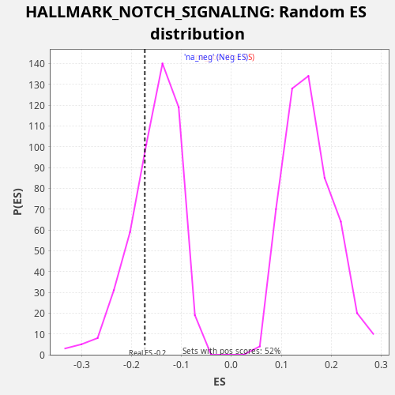

Profile of the Running ES Score & Positions of GeneSet Members on the Rank Ordered List
The same image in compressed SVG format
| Dataset | LabCL |
| Phenotype | NoPhenotypeAvailable |
| Upregulated in class | na_neg |
| GeneSet | HALLMARK_NOTCH_SIGNALING |
| Enrichment Score (ES) | -0.17308441 |
| Normalized Enrichment Score (NES) | -1.1335714 |
| Nominal p-value | 0.28041238 |
| FDR q-value | 0.35676324 |
| FWER p-Value | 0.999 |
| SYMBOL | RANK IN GENE LIST | RANK METRIC SCORE | RUNNING ES | CORE ENRICHMENT | |
|---|---|---|---|---|---|
| 1 | FZD1 | 508 | 11.850 | 0.0124 | No |
| 2 | NOTCH2 | 1203 | 3.278 | 0.0170 | No |
| 3 | WNT5A | 3847 | 0.260 | -0.0588 | No |
| 4 | ST3GAL6 | 4092 | 0.218 | -0.0355 | No |
| 5 | SAP30 | 4890 | 0.123 | -0.0351 | No |
| 6 | PPARD | 5177 | 0.100 | -0.0136 | No |
| 7 | CCND1 | 5800 | 0.064 | -0.0059 | No |
| 8 | ARRB1 | 6410 | 0.039 | 0.0022 | No |
| 9 | FZD7 | 6599 | 0.033 | 0.0278 | No |
| 10 | KAT2A | 7725 | 0.011 | 0.0147 | No |
| 11 | PSENEN | 7742 | 0.011 | 0.0473 | No |
| 12 | HEYL | 9977 | 0.000 | -0.0116 | No |
| 13 | APH1A | 11899 | -0.006 | -0.0576 | No |
| 14 | SKP1 | 12312 | -0.009 | -0.0413 | No |
| 15 | FZD5 | 14274 | -0.042 | -0.0889 | No |
| 16 | PSEN2 | 15903 | -0.100 | -0.1228 | No |
| 17 | DTX2 | 16885 | -0.160 | -0.1300 | No |
| 18 | PRKCA | 17056 | -0.173 | -0.1037 | No |
| 19 | RBX1 | 17586 | -0.220 | -0.0922 | No |
| 20 | FBXW11 | 17665 | -0.229 | -0.0621 | No |
| 21 | CUL1 | 18976 | -0.413 | -0.0829 | No |
| 22 | NOTCH1 | 19552 | -0.541 | -0.0733 | No |
| 23 | HES1 | 21970 | -2.155 | -0.1398 | Yes |
| 24 | DLL1 | 22252 | -2.711 | -0.1180 | Yes |
| 25 | DTX4 | 22299 | -2.828 | -0.0866 | Yes |
| 26 | MAML2 | 22441 | -3.295 | -0.0591 | Yes |
| 27 | LFNG | 23126 | -7.327 | -0.0540 | Yes |
| 28 | JAG1 | 23673 | -19.945 | -0.0432 | Yes |
| 29 | NOTCH3 | 23966 | -45.114 | -0.0219 | Yes |
| 30 | TCF7L2 | 24096 | -75.930 | 0.0061 | Yes |

{kind=link}
{kind=link}